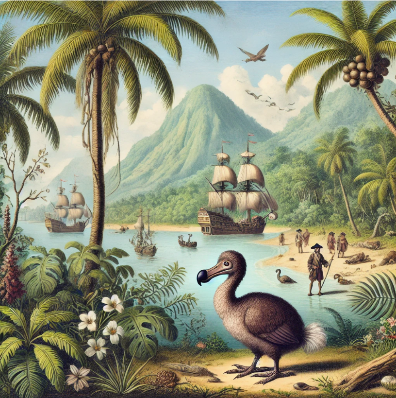

L'histoire de l'ile maurice en bref

Des découvertes aux premiers colons (Xe siècle – 1710)
Longtemps restée inhabitée, l’île est d'abord repérée par les navigateurs arabes et portugais avant d’être colonisée par les Hollandais en 1598.
Ils la baptisent Mauritius, introduisent la canne à sucre et provoquent malheureusement la disparition du dodo.
Face aux cyclones et aux difficultés, ils abandonnent l'île en 1710.
L’époque française : l’Île de France (1715 – 1810)
En 1715, les Français prennent possession du territoire.
Sous l’impulsion du gouverneur Mahé de La Bourdonnais,
la capitale Port-Louis est fondée et devient un port stratégique majeur sur la route des Indes.
L’économie s'organise autour des plantations, reposant sur le travail forcé des esclaves venus d'Afrique et de Madagascar.
La période britannique et le métissage (1810 – 1968)
Les Britanniques s’emparent de l’île en 1810 mais conservent la langue et la culture françaises sur place.
L’abolition de l'esclavage en 1835 marque un tournant majeur :
pour remplacer la main-d'œuvre dans les champs de canne, des centaines de milliers de travailleurs engagés arrivent d'Inde et de Chine,
façonnant la richesse multiculturelle actuelle du pays.
Une République moderne et dynamique (depuis 1968)
L’île Maurice accède à l’indépendance le 12 mars 1968 et devient une République en 1992.
Autrefois dépendante du sucre, elle a su se réinventer à travers le textile, le tourisme et les services,
devenant aujourd'hui un modèle de stabilité et de vivre-ensemble au cœur de l’océan Indien.